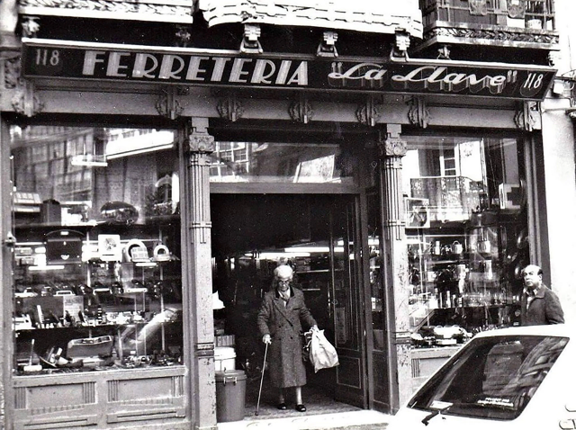

A little about our past | Early History
Our company, Tuscan Treasures, began back in 1980 when Tuscany was going through a severe drought that caused most vineyards to wilt. This was a huge issue as the wine export is a main source of economical stability within the area. Tuscany was reaching out to its community to figure out a solution to this drought of water and money. My grandfather, Gino Saverelli, volunteered his services to help promote everything Tuscany has to offer to tourists. With his connections he managed to bring more tourists to the area and spread the solution of tourists to other citizens. He did not solve the crisis single-handedly, but he contributed to helping out his community and that is a value that we hold dear and try to keep as the core value of our company.
A little about our past | Post-Drought
In 1982 the drought had stopped and normal wine production resumed around 1983. Around 1985 is when we decided to help support local businesses by advertising or selling their products. Eventually when tourism got big enough, we started collaborating with local craftsmen as well. This gave a great opportunity for both us and the local craftsman to grow and expand. From here we only grew bigger and expanded our reach once the internet reached further accessibility in the early 2000's. This was when we started implementing an online shopping system for any of our products we carried that could be shipped. Starting out, we could only ship intercontinental, but we have since upgraded to worldwide shipping and influence.